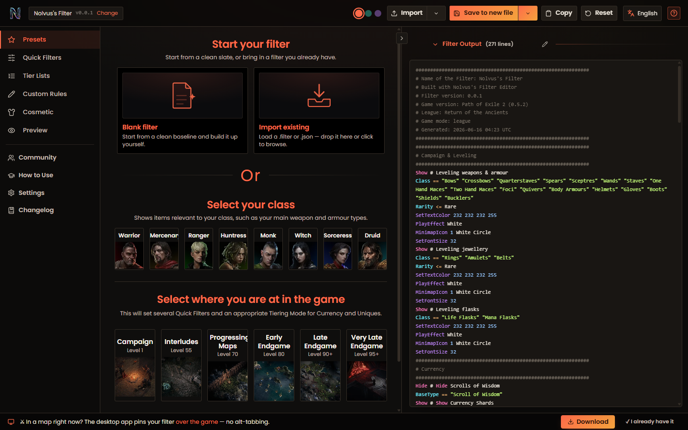

path of exile 2 · companion overlay
Your whole run,
Your whole run,
pinned over the game.
ExileCodex reads your game log and lays a living campaign guide, a speedrun tracker, a crafting bench and a live market right on top of Path of Exile 2 — no alt-tab, no memory hooks, no risk.
True in-game overlay
Follows your Client.txt
ToS-safe
